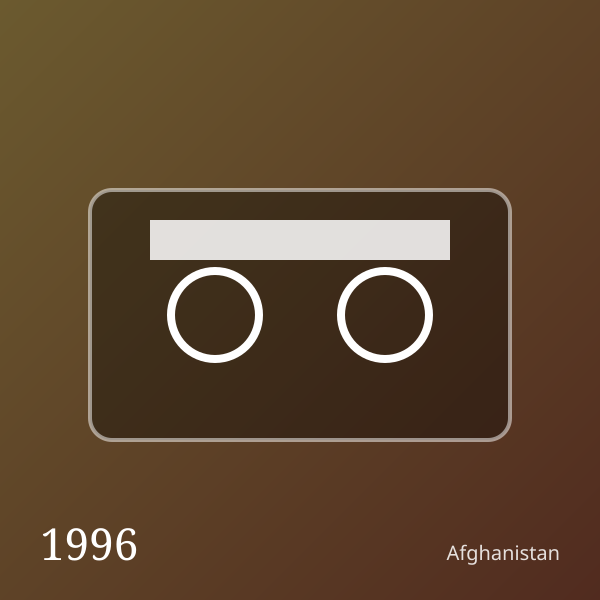

Radio Afghanistan (RTA) archive tapes hidden from the Taliban, 1996

Background: staff hid cassettes and claimed the archive had been looted; about 50,000 tapes survived. Sources: https://www.aljazeera.com/news/2005/11/13/saving-the-story-of-afghanistan · https://folkways.si.edu/magazine-summer-2011-afghanistans-collection/world-central-asia/music/article/smithsonian